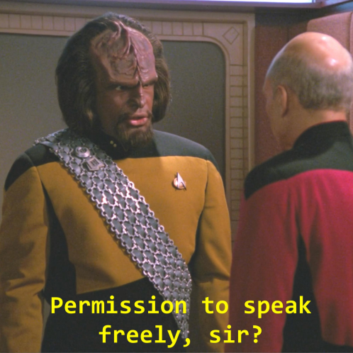

Permission required
I 4 - Alla dessa flaggor... sa vi att rättigheter är något vi kommer att gå igenom senare. Nu är senare. Hoppa in i Uppgifter/6.
Rättigheter är en viktig del av säkerhetssystemet. Det kan förhindra användare att av misstag ändra eller radera viktiga systemfiler eller att obehöriga kommer åt information de inte ska ha tillgång till. Det här är också anledningen till att sudo måste användas när du ska göra ändringar på filer utanför hemkatalogen (endast root-användare kan göra dessa ändringar).

I Linux så kan du se rättigheter för en fil eller katalog genom att använda ls -la. Det är en 10-tecken lång sträng, den kan exempelvis se ut så här:
drwx------
Det första tecknet indikerar om det är en fil eller katalog. Om det är en fil så är första tecknet - och om det är en katalog d. De nio nästkommande tecken är tre uppsättningar av rwx. Om det finns ett - tecken på de efterföljande nio betyder det att rättigheten saknas.
- r står för Read
- w står för Write
- x för Execute
De tre uppsättningarna är, i ordning: ägare, grupp och övriga. Baserat på vilken av dessa tre man är en del av avgör om du kan läsa, skriva eller köra en fil.
I exemplet ovan så har endast ägaren fulla rättigheter för katalogen och ingen av de andra grupperna kan göra något med den.
chmod
Det här är ett kommando som tillåter dig att ändra rättigheter för en fil eller katalog. Syntaxet kan skrivas på lite olika sätt. Uppsättningarna förkortas till ugo (user (ägaren), group, others)
# Lägga till execute för user
chmod u+x filen.txt
# Ta bort write för others
chmod o-r filen.txt
# Lägga till read för alla uppsättningarna
chmod +r filen.txt
Man kan även ändra på rättigheterna med siffror. x = 1, w = 2 och r = 4. Addera siffrorna för varje uppsättning.
Så om jag vill att alla ska ha fulla rättigheter till en fil kan jag skriva chmod 777 filen.txt. Alternativt kanske jag vill ha fulla rättigheter för ägaren men
inga rättigheter för others och att group bara ska kunna läsa, då kan jag skriva chmod 720 filen.txt.
chown
Detta kommando kräver att du är super-user så sudo kommer att efterfrågas. Det kommandot gör är att ändra ägare av en fil eller katalog.
# Ändra ägare
sudo chown ny_ägare filnamn
# Ändra både ägare och grupp
sudo chown ny_ägare:ny_grupp filnamn
# Ändra endast grupp
sudo chown :ny_grupp filnamn
Uppgift
Starta uppgiften med bash test.sh